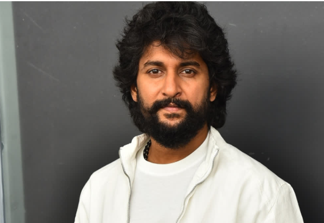

Name: Nani
Age: 35
Height: 6'
Movies: 50
Awards: 10
Ghanta Naveen Babu (born 24 February 1984), known professionally as Nani, is an Indian actor and producer who
predominantly works in Telugu cinema. He is one of the highest-paid and most popular Indian actors, Nani is a
recipient of several accolades including two Nandi Awards, three Filmfare Awards South and four SIIMA
Awards.
Nani established himself as a leading actor with critical and commercial success through films like Bhale Bhale
Magadivoy (2015), Krishna Gaadi Veera Prema Gaadha (2016), Gentleman (2016), Nenu Local (2017), Ninnu Kori
(2017), Middle Class Abbayi (2017), Jersey (2019), Nani's Gang Leader (2019), Shyam Singha Roy (2021), Ante
Sundaraniki (2022), Dasara (2023), Hi Nanna (2023), Saripodhaa Sanivaaram (2024) and HIT: The Third Case (2025).
Nani won two Filmfare Critics Award for Best Actor – Telugu for Bhale Bhale Magadivoy and Shyam Singha Roy and
Filmfare Award for Best Actor – Telugu for Dasara.
Nani expanded to production with D for Dopidi (2013), which was a profitable venture.Nani launched his own
production house Wall Poster Cinema in 2018, which has produced Awe (2018), HIT: The First Case (2020), HIT: The
Second Case (2022), and Court – State vs a Nobody (2025).[8] In 2018, Nani featured as the host of the Bigg Boss
Telugu 2. Nani has also been recognized for supporting emerging filmmakers in Telugu cinema.
As an undergraduate, Nani got addicted to movies, citing Mani Ratnam as a major influence.He wanted to become a
director; however, producer Anil Kumar Koneru allowed him to work on his production, Radha Gopalam (2005), as a
"clap director", alongside director Bapu.He then worked for films including Allari Bullodu (2005), Astram
(2006), and Dhee (2007). Nani took a break, to work on a film script. Bhargavi Mallela, a friend of his, who was
then working as a RJ for World Space Satellite, offered Nani work as an RJ.He accepted the offer and worked
there for one year, hosting a program named "Non-Stop Nani".
Director Mohan Krishna Indraganti noticed Nani in an advertisement and offered him a role in the aforementioned
film Ashta Chamma, also starring Swati Reddy.[ Ashta Chamma was well received by critics and Nani's performance
was praised by them. Sify.com wrote "Nani has a very good screen presence. He has good emotions and dances well,
though his body language sometimes reminds of Subhalekha Sudhakar – May this be treated as a compliment to the
ease that the veteran actor shows on the screen! His addiction is good too." His second film, Ride, was produced
by Bellamkonda Suresh, with Tanish, Swetha Basu Prasad and Aksha Pardasany playing important roles.Ride was also
a notable success at the box office. He next starred in Satyam Bellamkonda's film Snehituda... opposite Maadhavi
Latha. Snehituda... opened to negative reviews and the film was a flop at the box office. In 2010, he played the
main role in the film Bheemili Kabaddi Jattu, a remake of Vennila Kabadi Kuzhu, with Saranya Mohan reprising her
role as the heroine. The film opened to positive reviews with Nani's performance receiving appreciation.
Rediff.com said Nani "perfectly fits into the role" and commended him for selecting the script, and One India
commented that Nani "has given his best" and was "suited perfectly to the role".The film was a surprise hit at
the box office